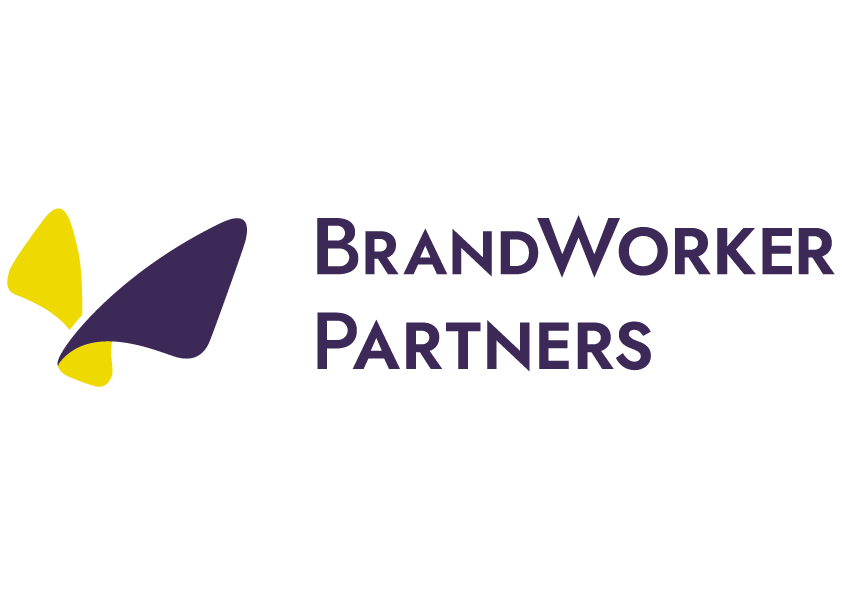
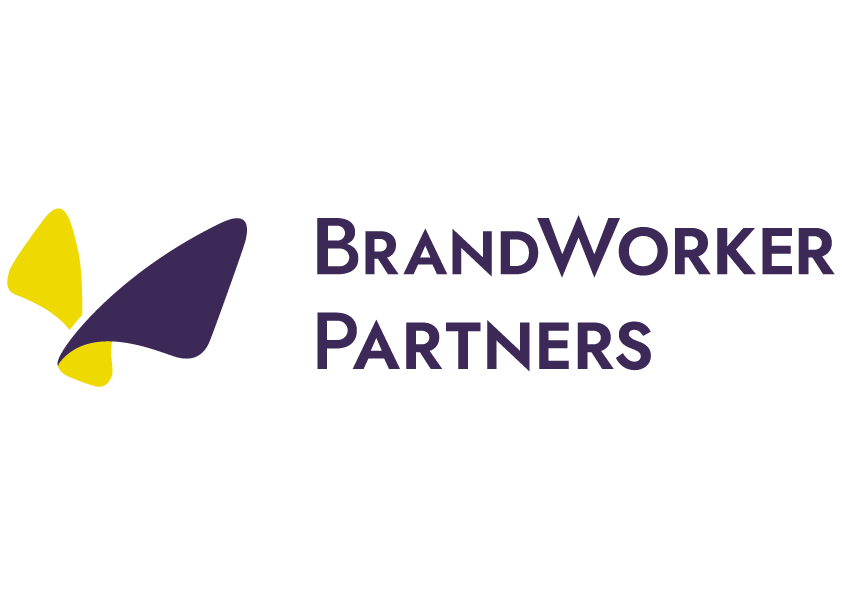

AI가 팀의 숨은 신호를 분석하고,
리더가 놓치기 쉬운 정렬 문제를 먼저 알려드립니다.
최고의 전문가들과 함께합니다
 

하루 한 번 가벼운 질문으로 팀의 에너지와 방향을 체크합니다.
답변 속 톤과 맥락을 분석해 문제가 되기 전에 알려드립니다.
팀 상태 변화를 추적하고, 필요한 행동을 제안받으세요.
팀원들이 회사의 비전과 목표에 얼마나 연결되어 있는지 측정합니다.
사람은 조금 늘지만, 대화의 복잡도는
기하급수적으로 폭발합니다.
가장 혼란스러운 이유 1위
보이지 않는 비효율에 대한 호소
우리 조직 인원 수
이 비용의 3% 미만으로 Q-ALIGN을 시작하세요.
무료로 시작하기매일 던지는 가벼운 질문으로, 조직의 보이지 않는 '초기 기울기'를 24시간 모니터링합니다.
Q-ALIGN 엔진이 텍스트 뒤에 숨겨진 맥락을 분석하여, 리더와 조직원 사이의 '해석의 격차(Drift)'를 찾아냅니다.
문제가 커지기 전에 리더에게 알림을 보내고, 즉시 실행 가능한 'Action Item'을 제공하여 정렬을 맞춥니다.
내 일이 나를 성장시키는가
일에 집중을 방해하는 요소가 있는가
조직과의 협업이 잘 맞물리는가
의사결정이 고객 기준에 맞는가
내 일이 회사 비전과 연결되는가
심리적으로 안전하게 일하고 있는가
하루 3초 입력만으로 조직의 에너지 흐름과 미뤄지는 일이 선명하게 드러납니다. 이제 '감'이 아니라 데이터로 판단할 수 있습니다.
정렬 기울기를 기준으로 리더가 취할 1–2가지 행동이 자동으로 요약됩니다. 리더십의 갈피를 잡아주는 실질적인 도구입니다.
기준 차이가 발견된 지점을 감지해 어디서 엇갈렸는지 선명하게 드러냅니다. 불필요한 회의 없이 필요한 순간에만 대화를 시작할 수 있습니다.
Q-ALIGN은 조직이 이미 열심히 일하고 있음에도 목표와 사람 상태 사이에 어긋남이 생기고 있는 순간을 먼저
알려줍니다.
성과가 떨어진 뒤가 아니라, 아직 말로 설명되지 않은 초기의 불균형 신호를 진단합니다.
아니에요. Q-ALIGN은 점수를 매기거나 평가하기 위한 설문이 아닙니다.
하루 한 번의 짧은 질문을 통해, 지금 조직이 어떤 대화를 필요로 하는지를 드러내는 진단 도구예요.
회사 생성일 기준으로 경과 일수에 따라 자동 선택됩니다. 질문은 Vision, Customer, Productivity, Growth, PsychologicalSafety, Teamwork 6개 카테고리에서 순환합니다.
질문 설정에 따라 다릅니다. 관리자가 익명 허용을 설정한 질문에서만 익명 답변이 가능합니다.
개인의 업무 스타일과 성향을 AI가 분석한 결과입니다. 과거 답변 텍스트, 평점, 재직 기간 등을 종합하여 업무 패턴, 협업 스타일, 성장 영역, 추천 행동을 파악합니다.
새 답변이 추가되면 자동으로 갱신됩니다.
팀 참여율이 50% 미만이면 AI 분석이 비활성화됩니다. 충분한 데이터가 없으면 분석 결과의 신뢰도가 낮아지기 때문입니다.
팀원들에게 답변을 독려하여 참여율을 50% 이상으로 높이세요.
AI가 답변의 톤을 분석하여 분류한 결과입니다.
Red: 우려/불만/긴급
Purple: 혼란/질문/불확실
Green: 긍정/성취/안정
Red 플래그가 많은 영역에 우선 관심을 기울이면 됩니다.
충돌하지 않습니다. Q-ALIGN은 일을 바꾸지 않고, 일을 바라보는 기준을 정렬합니다.
기존 목표 관리, 일정 관리 도구 위에 자연스럽게 얹힙니다.
여러 조직원의 응답을 종합해, 오늘 리더가 할 수 있는 가장 영향력 있는 한 가지 행동을 제안합니다.
작지만, 조직의 정렬을 다시 맞추는 데 집중합니다.
다음을 확인하세요:
1. 해당 주에 답변이 있는지 확인
2. 참여율이 50% 이상인지 확인
충분한 데이터가 모이면 AI 분석이 자동으로 생성됩니다.
Q-ALIGN은 침묵 속의 기울기를 가시화하는
유일한 OS입니다.